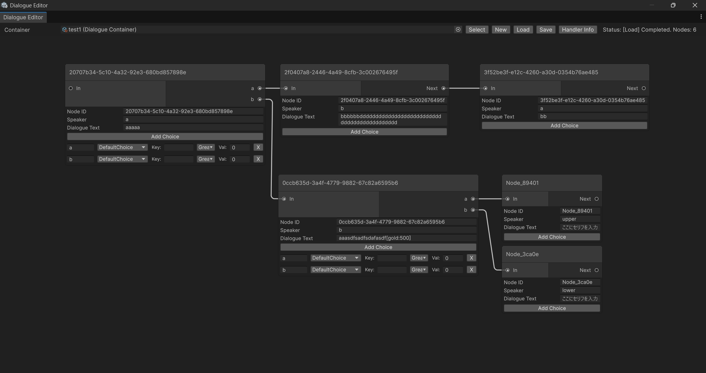
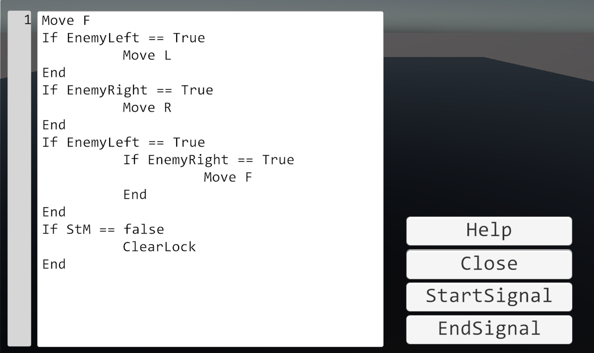
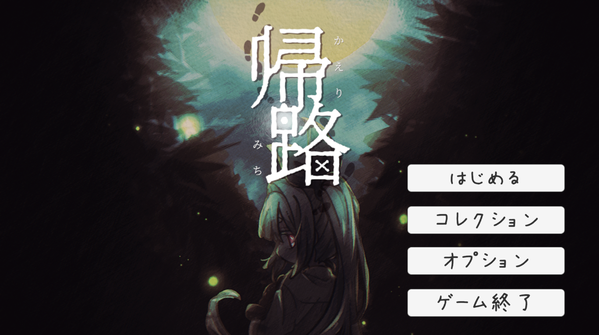
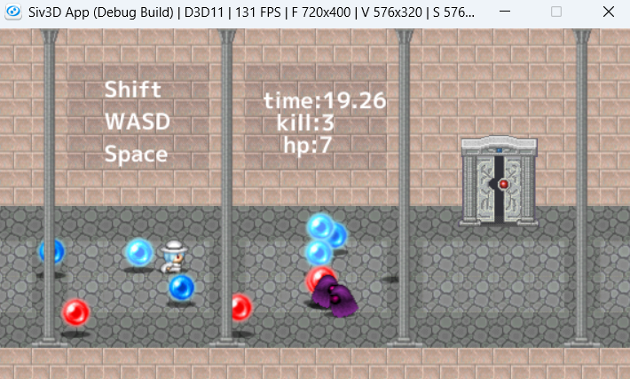
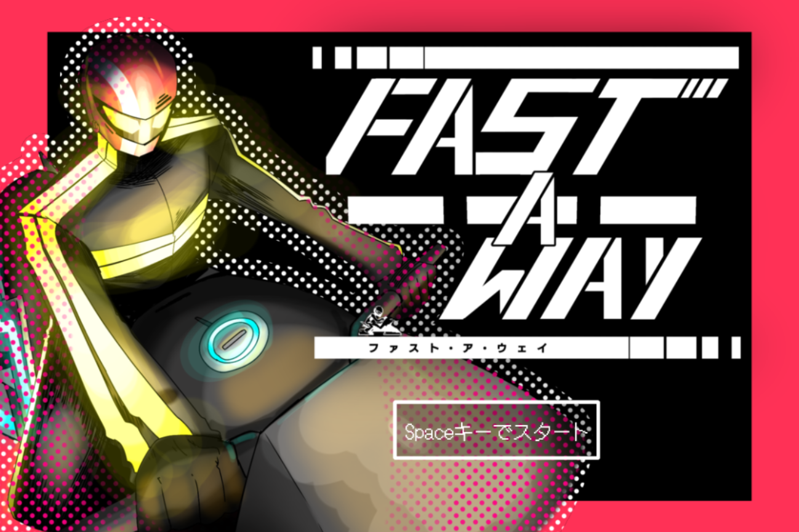
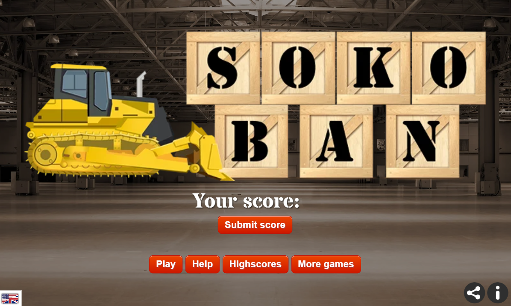

DialogueSystem
ゲーム開発において会話機能の実装を容易かつ円滑に行えるUnity拡張ツール。プラグイン機構を参考に拡張性の高い設計を実現。
💡 工夫・アピール点
プログラミングができない開発者でも容易に使えるノードベース設計を採用。インポートするだけで即座に使用できるパッケージ化を進行中。
Game Programmer (Client / Front / Tools)
Unity・C++を中心としたゲームプログラミングと、開発を円滑にするエディタ拡張・ツール開発に取り組んでいます。
プレイヤーを楽しませるゲームプレイと、堅牢で拡張しやすいシステム設計を両立することを目指しています。
これまでに開発したゲーム・拡張ツールです。動画・ビルド・リポジトリをご覧いただけます。

ゲーム開発において会話機能の実装を容易かつ円滑に行えるUnity拡張ツール。プラグイン機構を参考に拡張性の高い設計を実現。

ロボット相撲の動作原理をゲーム内でスクリプティングして学べるシリアスゲーム。高校時代の部活動の経験をもとに開発。

学内チームで制作中のホラーアドベンチャーゲーム。不気味な夜道を帰りながら展開されるストーリー体験。

C++言語を用いた2Dシューティングゲーム。クラス設計を綿密に行い、ポリモーフィズムや継承を徹底活用。

学内ゲームジャムにて制作した横スクロールランアクション。JavaScriptとWWS.jsライブラリを用いて開発。

Unityを用いて「倉庫番」のゲーム挙動を忠実に再現。ゲーム細部の観察力と実装力を高める目的で制作。
| 名前 | 前田 清斗 (kiyo) |
| 志望職種 | ゲームプログラマ (フロント / クライアント / ツール) |
| GitHub | @kiyochann |
| 連絡先 | kiyoto.school@gmail.com |
Unityを中心にゲームプログラミングを学んでいます。単にゲームを動かすだけでなく、他の開発メンバーや自分が開発しやすい「エディタ拡張」「ツール設計」「クラス構造」への配慮を大切にしています。
高校時代の部活動（ロボット相撲）でのモノづくり経験をきっかけに、プログラミングによるシミュレーションやシステム構築の楽しさを知りました。チーム制作・個人制作問わず、常に新しい技術に挑戦し続けています。
📝 自己PRの全文を見る (Notion)作品や採用に関するお問い合わせ・ご連絡はお気軽にどうぞ。